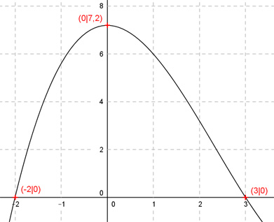

Aufgabe 37 Der Graph einer ganzrationalen Funktion 3. Grades schneidet die x-Achse bei -2 und 3 und hat einen Hochpunkt bei (0|7,2). Wie lautet seine Funktionsgleichung?  Allgemeine Form einer ganzrationalen Funktion 3. Grades: f(x) = ax3 + bx2 + cx + d f’(x) = 3ax2 + 2bx + c f’’(x) = 6ax + 2b 4 Bedingungen: 1. Schneidet die x-Achse an der Stelle x = -2 bedeutet: f(-2) = 0 --> a * (-2)3 + b * (-2)2 + c * (-2) + d = 0 --> -8a + 4b - 2c + d = 0 I 2. Schneidet die x-Achse an der Stelle x = 3 bedeutet: f(3) = 0 --> a * 33 + b * 32 + c * 3 + d = 0 --> 27a + 9b + 6c + d = 0 II 3. Hat einen Hochpunkt (0|7,2) bedeutet zum einen: f(0) = 7,2 --> a * 03 + b * 02 + c * 0 + d = 7,2 --> d = 7,2 4. Hat einen Hochpunkt bei (0|7,2) bedeutet zum anderen: f’(0) = 0 --> 3a * 02 + 2b * 0 + c = 0 --> c = 0 I * 9 + II * (-4), c = 0 und d = 7,2 eingesetzt: -72a + 36b + 64,8 = 0 -108a - 36b - 28,8 = 0 ----------------------- -180a + 36 = 0|-36 -180a = -36 |:(-180) -36 1 a = ------- = --- = 0,2 -180 5 a = 0,2 und d = 7,2 in I eingesetzt: -8 * 0,2 + 4b + 7,2 = 0 -1,6 + 4b + 7,2 = 0 4b + 5,6 = 0 |-5,6 4b = -5,6 | :4 b = -1,4 Gesuchte Funktionsgleichung: f(x) = 0,2x3 - 1,4x3 + 7,2